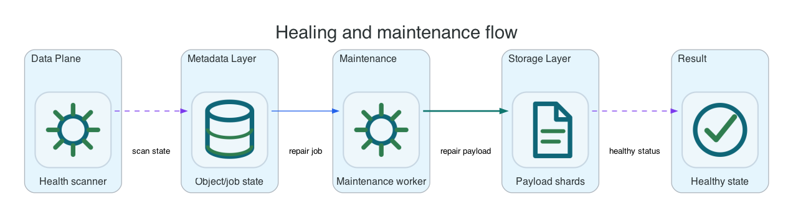

Reference / Runtime
Healing and maintenance cycles.
The healing service runs background repair and housekeeping for object shards, lifecycle, replication, inventory, metadata tables, restore expiry, and multipart cleanup. Foreground S3 correctness must not depend on an operator manually triggering healing.
Maintenance Work

| Work Type | Purpose | Risk If Stuck |
|---|---|---|
| Shard repair | Rebuild missing or degraded object shards after node/PVC disruption. | Reduced failure tolerance. |
| Lifecycle policy and restore | Expire, transition, restore, and clean objects according to policy. | Retention/cost policy drift. |
| Replication | Copy eligible object versions to destination buckets. | DR/migration lag. |
| Inventory and metadata tables | Generate reports and table snapshots. | Consumers see stale operational data. |
| Multipart cleanup | Abort old incomplete uploads when lifecycle policy requires it. | Capacity leak. |
OpenShift Checks
oc -n li9-s3-runtime get deploy healing-service
oc -n li9-s3-runtime run healing-check --rm -i --restart=Never --image=curlimages/curl:8.12.1 -- \
sh -ceu 'curl -ks "${LI9_INTERNAL_SCHEME:-https}://healing-service:8080/v1/heal/last"'
oc -n li9-s3-runtime run healing-metrics-check --rm -i --restart=Never --image=curlimages/curl:8.12.1 -- \
sh -ceu 'curl -ks "${LI9_INTERNAL_SCHEME:-https}://healing-service:8080/metrics" | grep -E "healing|repair|replication|lifecycle"'Manual Trigger
Use manual trigger only for deterministic test windows or after controlled maintenance. It should not be part of normal write-path correctness.
oc -n li9-s3-runtime run healing-trigger --rm -i --restart=Never --image=curlimages/curl:8.12.1 -- \
sh -ceu 'curl -ks -X POST "${LI9_INTERNAL_SCHEME:-https}://healing-service:8080/v1/heal"'Alerting
- Last successful healing run is older than the configured threshold.
- Repair backlog or replication backlog grows continuously.
- Lifecycle transition or restore queue age exceeds the expected window.
- Healing service is down while storage nodes are degraded.